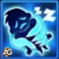
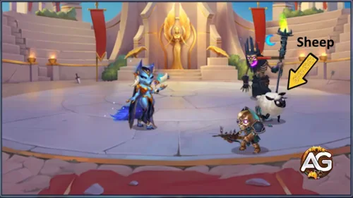
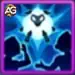
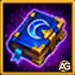
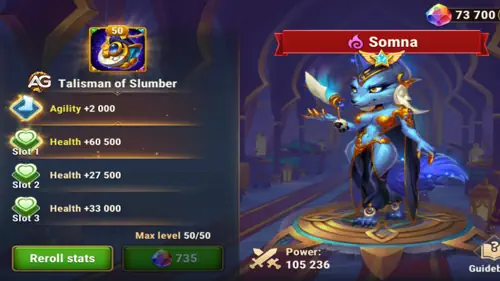

In a meta dominated by the overwhelming power of Kayla, finding effective counters is critical.
Enter Somna, a control specialist who excels at disabling high-damage heroes through sleep, debuffs, and transformations making her one of the most effective counters to Kayla.
When paired with Lian already known as a strong anti-Kayla hero Somna creates a nightmare scenario for Kayla-based teams.
This guide covers everything you need to know about using Somna strategically in Hero Wars Alliance: her role, synergy, where to get her, and why she's a must-have against the most broken hero in the game.
Somna Guide - Hero Wars Alliance, a game developed by Nexters.
Who Is Somna?
Somna is a middle-line control hero from the Way of Mystery faction. Her agility-based abilities reduce physical damage, suppress armor penetration, and even turn enemies into sheep making her a tactical powerhouse against high-burst opponents like Kayla.
Glyph Class: Control
Position: Middle Line
Main Stat: Agility
Faction: Way of Mystery
How to get Soul Stones: Only available during special events
Synergy: Lian, Satori, Folio
Hydra Tier List: C
While Somna may not rank high in Hydra, her control toolkit is devastating in PvP. Against Kayla-heavy comps, she shines especially when teamed up with Lian to lock down aggressive frontlines and stop burst chains before they start.
If Kayla is giving you trouble in Hero Wars Alliance, building around Somna might be the answer you’ve been searching for.
Somna Pros and Cons - Hero Wars Alliance
✅ Pros
Excellent crowd control with sleep effects that disrupt enemy backlines.
Synergizes well with heroes like Lian, Satori, and Folio who benefit from disabled or sleeping enemies.
Her weapon artifact increases all outgoing damage to enemies with low health by granting bonus Crushing when enemies are near death.
Can shift the tide of battle when paired with strong healers like Guus.
Magic-based hero, effective against physically strong teams with weak magic defense.
⌠Cons
Enemies wake up from sleep when hit, requiring careful team coordination to maximize crowd control.
Currently has only one talisman, limiting her build flexibility until future updates.
Low durability needs protection or healing support to survive longer fights.
Dependent on synergy: performs much better in combo teams rather than alone.
Discover the best order to level Somna's skills and turn your enemies into helpless sheep with strategic control effects.
1. Lullaby Veil
Somna puts all enemies to sleep for 7 seconds. While asleep, enemies are inactive and awaken when damaged. After waking, they gain one stack of the Drowsiness effect for 10 seconds, reducing their physical damage. This effect can stack up to 3 times.
Evolution Priority:Very High – This is Somna's core control skill. It neutralizes all enemies briefly and sets them up for further debuffs. Maximizing this skill first amplifies your entire team’s survivability and combos.
Lullaby Veil, Hero Wars Alliance.
2. Drowsy Blessing
This skill enhances the nearest ally (usually a frontline hero) for 12 seconds to apply Drowsiness on hit, reducing physical damage and armor penetration of enemies. Mystery Heroes extend this effect by an additional 8 seconds.
Evolution Priority:High – Great synergy for team defense and offensive weakening. While not the first skill to upgrade, it's essential to enhance allies' debuff capabilities.
Drowsy Blessing, Hero Wars Alliance.

3. Curse of the Wool
Somna applies a Drowsiness stack and deals damage to nearby enemies. If a target already has 3 stacks of Drowsiness, they are transformed into a sheep for 3 seconds, disabling their attacks. Sheep flee and cannot be transformed again for 10 seconds.
Physical damage: (Phys. atk. + 6000)
Evolution Priority:Medium High – This skill is excellent in follow-up combos. It's especially effective if you’ve already leveled up Lullaby Veil and Drowsy Blessing to ensure enemies are stacked before casting this.

Curse of the Wool, Hero Wars Alliance.

4. Silence of the Sheep
When Somna takes damage, she applies 3 stacks of Drowsiness to the attacker and instantly transforms them into a sheep. Allies who attack the sheep deal extra physical damage. Transformation chance is reduced against enemies above level 120.
Additional Physical Damage: (10% Health + 12000)
Evolution Priority:Medium – While this skill adds reactive crowd control, it’s situational and depends on Somna being targeted. Not a priority for players focusing on consistent control output.
Somna’s weapon artifact grants a powerful team-wide Crushing boost when her ultimate is activated, enhancing overall physical damage output.
1st - Weapon Artifact: Sir Dumpling
The Crushing bonus from Somna's weapon artifact increases all types of outgoing damage Physical, Magical, and Pure against enemies with low health. This makes her especially synergistic with high burst damage dealers like
Folio and
Satori, allowing your team to finish off weakened enemies more effectively when her ultimate activates the artifact effect.
Evolution Priority:Very High – Her main team contribution revolves around empowering your entire frontline or DPS line with this artifact.

2nd - Book Artifact: Grimoire of Fortitude
This artifact increases Somna’s health +53394 and toughness +2967. Toughness reduces all damage taken when her HP is low helping her survive long enough to use her control skills again and again.
Evolution Priority:High – Keeps her alive longer during critical moments, especially against burst damage dealers like Kayla. Great defensive value in PvP and PvE.
3rd - Ring Artifact: Agility Ring
This artifact increases Somna’s base agility, which boosts her physical attack slightly and gives a bit more armor. It contributes to overall stats but doesn’t directly affect her control power.
Evolution Priority:Medium – A solid long-term upgrade for overall performance, but it should come last since it doesn’t amplify her core abilities like sleep or transformation.
Somna Glyph Evolution Priority
The glyphs of Somna in Hero Wars Alliance boost her survivability and counter potential. Here’s the real glyph priority explained.
1st – Physical Attack +8340:
Physical Attack directly increases the damage output of Somna’s active skills, especially her first and ultimate abilities. Prioritizing this glyph ensures she remains a serious offensive threat, especially against heroes like Kayla.
Evolution Priority:High – Key for maximizing her burst damage and pressure on backline targets.
2nd – Health +122800:
This glyph enhances Somna's survivability in prolonged fights. When combined with her Toughness stat and a healer like Guus, it gives her more time to apply pressure and counter enemies like Kayla effectively.
Evolution Priority:High – Synergizes well with Toughness and team-based sustain strategies.
3rd – Toughness:
Toughness is a new and powerful stat that reduces all damage types when the hero’s health is low. This glyph is especially valuable for keeping Somna alive during critical moments, making it perfect for comeback scenarios.
Evolution Priority:Medium – Unique defensive boost, highly situational but game-changing when timed right.
4th – Armor +12850:
Armor helps reduce physical damage, especially from heroes like Kayla and other assassins. However, because Toughness already provides broader protection, this glyph is less urgent to max early on.
Evolution Priority:Medium-Low – Good defense, but less impactful due to overlapping effects with Toughness.
5th – Agility +2110:
Agility increases physical attack slightly and offers minor boosts to armor. While helpful, the scaling is too low to compete with the impact of the other glyphs above.
Evolution Priority:Low – Least impactful glyph for her current battle role.
Somna Talisman Guide Hero Wars Alliance
Talisman of Slumber
Unlike skins, which grant passive bonuses regardless of which one is equipped, only the equipped talisman provides its stats in battle. Choosing the right talisman can therefore have a major impact on performance.
Currently, Somna has only one talisman available the Talisman of Slumber and it is very well suited for her. It greatly increases her max health, which improves her resistance to all types of damage: physical, magical, and pure. This makes it a strong pick for keeping her alive long enough to support allies and unleash her area-based ultimate.

Talisman of Slumber, Hero Wars Alliance.
Main Slot: Agility +2000
Each point of Agility grants:
– 2 points of Physical Attack;
– 1 point of Armor;
– +1 extra point of Physical Attack if Agility is the hero’s main stat.
Total for the 3 secondary slots: Health +181,500 (60,500 x 3)
The combined Health boost greatly improves Somna's survivability against all damage types.
This is ideal for setups where Somna needs to stay alive long enough to activate her ultimate and empower the team with her weapon artifact effect.
Iris counters Somna by exploiting her debuff-based mechanics. Her “Soul Burning†skill deals damage based on the number of debuffed enemies and can execute low-health enemies a perfect match against Somna, who often plays extended fights. Additionally, her “Mysterious Pact†reduces enemy Physical and Magic Attack when they apply debuffs or marks, further weakening Somna's utility and survivability in team fights.
Soleil is highly effective against Somna thanks to his strong anti-control mechanics. With “Mark of the Ancient God”, Soleil punishes enemies that rely on control effects like Somna by inflicting heavy bonus damage. His “Blessing of the Ancient God†boosts allies' damage and healing, scaling further with every control ability used by enemies. This not only mitigates Somna’s pressure but turns her control into an advantage for Soleil's team.
Somna Synergy in Hero Wars Alliance
Somna has powerful synergy with heroes who either apply control effects like sleep or capitalize on debuffed enemies. Below are top synergy picks for Somna, based on how their skills enhance her effectiveness in battle.
Folio's Ancient Scriptures immobilizes enemies and causes delayed area damage, giving Somna time to activate her sleep-based abilities without interruption. The immobilization also ensures grouped-up enemies, increasing Somna's AoE impact.
Lian charms enemies and puts them to sleep without waking them with her own attacks, setting up ideal crowd control that pairs seamlessly with Somna's sleep-dependent abilities. Their combo makes it difficult for enemy teams to recover.
Satori applies Fox Fire Marks while enemies are incapacitated, including those affected by Somna’s sleep. This results in massive follow-up magic damage when the marks detonate, giving the duo huge burst potential against buff-heavy teams.
Best Teams for Somna Hero Wars Alliance
Top Defense Teams for Somna
#
Table: Best Defense Teams for Somna
Rufus, Satori, Somna, Folio, Lian
Rufus, Satori, Somna, Folio, Faceless
Tempus, Iris, Somna, Polaris, Octavia
Tempus, Soleil, Iris, Somna, Peech
Soleil, Iris, Somna, Polaris, Peech
Tempus, Iris, Somna, Polaris, Peech
Kayla, Tempus, Soleil, Somna, Aidan
Kayla, Tempus, Guus, Soleil, Aidan
Kayla, Guus, Soleil, Somna, Aidan
Julius, Kayla, Soleil, Peech, Aidan
Kayla, Dante, Soleil, Aidan, Octavia
Kayla, Dante, Tempus, Aidan, Octavia
Top Attack Teams for Somna
#
Table: Best Attack Teams for Somna
Lian, Folio, Somna, Satori, Rufus
Faceless, Folio, Somna, Satori, Rufus
Octavia, Polaris, Somna, Iris, Tempus
Peech, Somna, Iris, Soleil, Tempus
Peech, Polaris, Somna, Iris, Soleil
Peech, Polaris, Somna, Iris, Tempus
Aidan, Somna, Soleil, Tempus, Kayla
Aidan, Soleil, Guus, Tempus, Kayla
Aidan, Somna, Soleil, Guus, Kayla
Aidan, Peech, Soleil, Kayla, Julius
Octavia, Aidan, Soleil, Dante, Kayla
Octavia, Aidan, Tempus, Dante, Kayla
Conclusion - Somna Hero Guide
Somna is a powerful addition to Hero Wars Alliance, offering strong crowd control, disruptive sleep mechanics, and synergy with heroes like Lian, Satori, and Folio. While she currently has only one Talisman, her potential in controlling the battlefield makes her a solid investment for both PvE and PvP content. To get the best out of Somna, pair her with allies who can take advantage of sleeping or disabled enemies, and support her with healing or protection due to her lower durability. As new Talismans and content are released, Somna is likely to become even more versatile and impactful in team compositions.
Sugestões de VÃdeo:
Video: 🮠SOMNA LIVE! Exclusive Tests of the New Heroine Before Launch | Hero Wars Alliance
Did you like our guide about Somna for Hero Wars Mobile? Is there something you didn't understand or would like to suggest changes to? We invite you to join our comment section on the Alexandre Games Blog page. Feel free to express your opinion, clarify your doubts, and share your suggestions. Click the button below to get started:


 Guus Hero Guide – Healer from the Way of Honor for Hero Wars Alliance
Guus Hero Guide – Healer from the Way of Honor for Hero Wars Alliance


 Rufus Rework Guide in Hero Wars Alliance
Rufus Rework Guide in Hero Wars Alliance